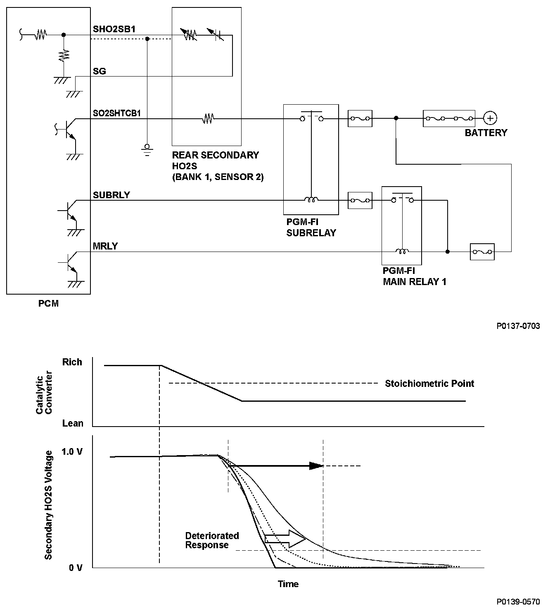
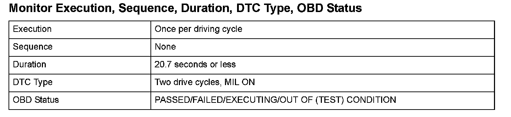
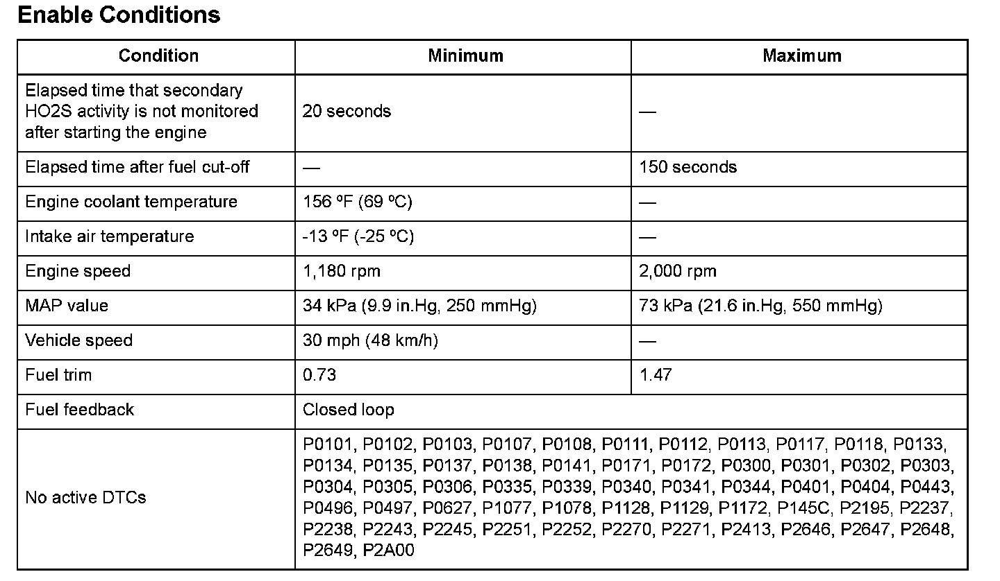

Advanced Diagnostics
DTC P0139: Rear Secondary Heated Oxygen Sensor (Secondary HO2S (Bank 1, Sensor 2)) Circuit Slow Response
General Description
The rear secondary heated oxygen sensor (HO2S) (bank 1, sensor 2) detects the oxygen content in the exhaust gas downstream of the three way catalytic converter (TWC) during stoichiometric air/fuel ratio feedback control. The rear secondary HO2S controls the air/fuel ratio with the rear A/F sensor output voltage to optimize TWC efficiency.
If the response time of the rear secondary HO2S becomes longer than the specified time after current to the secondary HO2S heater is applied, a malfunction is detected and a DTC is stored.

Monitor Execution, Sequence, Duration, DTC Type, OBD Status

Enable Conditions
Malfunction Threshold
1. When the rear secondary HO2S output drops to the response deterioration judgment threshold value and the response characteristics measurement is finished.
2. The voltage does not drop to the response deterioration judgment threshold value after a predetermined time (2.00 seconds) has elapsed.
Driving Pattern
1. Start the engine. Let it idle until the radiator fan comes on
2. Then, drive immediately at a steady speed of 35 mph (57 km/h) or more for at least 20.7 seconds.
- Drive the vehicle in this manner only if the traffic regulations and ambient conditions allow.
Diagnosis Details
Conditions for illuminating the MIL
When a malfunction is detected during the first drive cycle, a Temporary DTC is stored in the PCM memory. If the malfunction recurs during the next (second) drive cycle, the MIL comes on and the DTC and the freeze frame data are stored.
Conditions for clearing the MIL
The MIL will be cleared if the malfunction does not recur during three consecutive trips in which the diagnostic runs.
The MIL, the DTC, the Temporary DTC, and the freeze frame data can be cleared by using the scan tool Clear command or by disconnecting the battery.